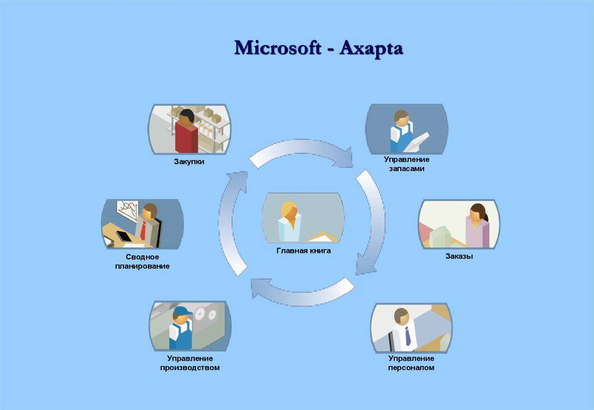
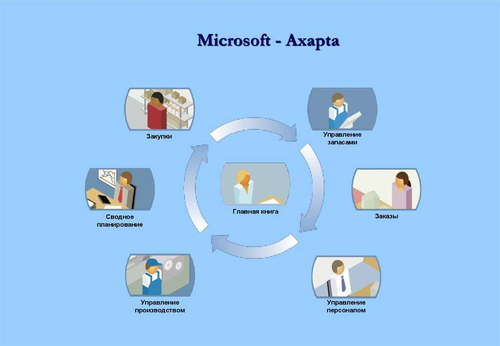

Концепция управления цепочками поставок - SCM вызывает у российских компаний все больший практический интерес. Лидеры
бизнеса осознают, что укрепления своей конкуренции на быстро развивающемся российском рынке и достижения успеха за
рубежом нужно следить за управлением поставками. Судя по появлению топ - менеджеров, отвечающих за развитие цепочки
поставок, можно сказать, что значимость SCM для современного бизнеса возросла. В последние годы тематика SCM входит в
повестку дня многих деловых конференций, семинаров-практикумов.В нашей стране проблема управления цепочками давно является довольно острой. Все предприятия разделились на два фланга –
тех, кто собрался вводить западные предложения и тех, кто хотел пользоваться российскими аналогами. Давайте посмотрим, какие
программы предлагают в России.
Renaissance
Система Renaissance, продаваемая компанией "Интерфейс", представляет собой решение, которое позволяет
хранить,
использовать и анализировать информацию компании по разным направлениям.
В систему входят подсистемы Renaissance Distribution и Renaissance Transport Manager. Как и большинство
западных решений,
Renaissance Distribution является комплексным SCM решением, которое позволяет
создать единое
информационное пространство
для всех служб, задействованных в процессе продаж.
Renaissance позволяет компании составлять оперативный план перевозок, планировать транспортировки,
осуществлять контроль за перемещением товара. В результате использования Renaissance Transport manager
компания может заранее составить план перевозок,
определять время доставки товаров клиентам, снижать транспортные издержки. База данных позволит компании обладать актуальной информацией по
товарам, которые находятся в пути, оформлять документацию на перевозки.
Axapta
Отечественные разработчики предлагают программу AXAPTA , которая внедряется в общую систему управления предприятием.
Стоит так же отметить, что для российских программ характерен акцент на финансовую деятельность предприятия и бухгалтерский
учет. Именно поэтому программа AXAPTA подразумевает под собой автоматическую генерацию бухгалтерской документации -
счетов - фактур, платежных поручений, накладных. Безусловно, это является важным моментом в SCM решениях, которые
обязательно должны быть связаны с финансовыми службами, однако как показывает опыт западного рынка далеко не единственнымMicrosoft-Axapta
 
